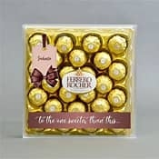

|
CSS
|
FERRERO ROCHER
|

|
Ferrero Rocher is a chocolate and
hazelnut product produced by the Italian confectionery company Ferrero. Its creation is
attributed to Michele Ferrero, previously the owner of Ferrero SpA, who introduced the
sweet in 1979.Each Ferrero Rocher ball is covered in foil and placed into a paper liner.
The
confectionery is machine made and much of its production process is designed to be
secretive.The candy is sold worldwide and holds a strong cultural presence, in part
due to its association with Christmas and its popular 1990s advertthat aired in the
United Kingdom.Ferrero Rocher offers a unique taste experience of contrasting layers: a
whole
crunchy hazelnut in the heart, a delicious creamy hazelnut filling, a crisp wafer .
|
HISTORY
Ferrero Rocher was introduced in 1979 in Italy and in other parts of Europe in
1982. Shortly after its release, production was halted due to a problem with label
printing.Michele Ferrero, the credited inventor, named the chocolate after a grotto in
the Roman Catholic shrine of Lourdes, Rocher de Massabielle.Rocher comes from French and
means rock or boulder.
|
INGREDIENTS
The chocolate consists of a whole roasted hazelnut encased in a thin wafer shell
filled with hazelnut chocolate and covered in milk chocolate and chopped hazelnuts.[6]
Its ingredients are milk chocolate, sugar, cocoa butter, cocoa mass, skim milk powder,
butteroil, lecithin as emulsifier (soy), vanillin (artificial flavor), hazelnuts, palm
oil, wheat flour, whey (milk), low fat cocoa powder, sodium bicarbonate (leavening
agent), and salt.
|
PRODUCTION
The production process is secretive, with no smartphones or notebooks allowed
inside the production facilities. As of 2015, few journalists have ever been invited to
visit.As of 2015, the production in the Alba factory totals 24 million Ferrero
Rochers a day.The sweet is produced by machinery. The process begins with flat sheets of wafer with
hemispheres moving down an assembly line.The hemispheres of the wafers are then
filled with a chocolate hazelnut cream and part of a hazelnut. Next, two of these wafer
sheets, one with a hazelnut and one with hazelnut chocolate cream, are clamped together.
The excess wafer is cut away producing wafer balls. These balls are then coated with a
layer of chocolate, a layer of chopped hazelnuts, and a final layer of milk chocolate
before the chocolate ball is wrapped in its prominent gold foil.
|